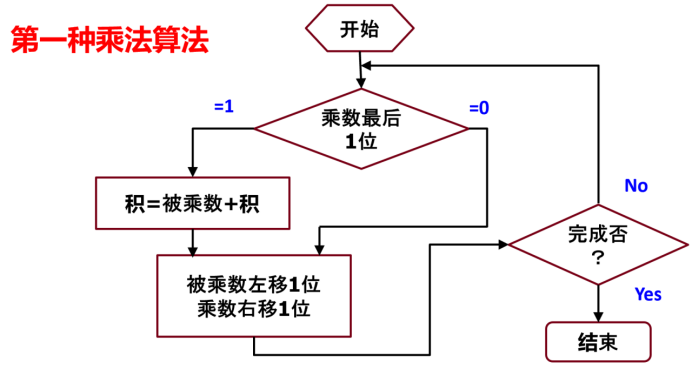
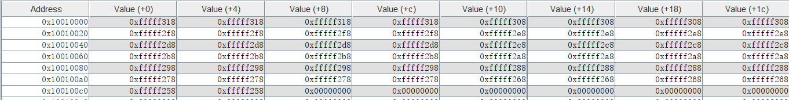
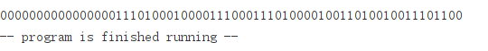
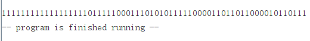
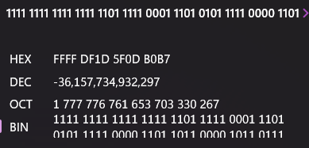
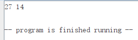

MIPS指令集2
实验内容
- 用汇编程序实现以下伪代码
Int main ()
{
Int K,Y;
Int Z[50];
Y=56;
For(k=0;k<50;K++) Z[k]=Y-16*(k/4+210);
}
- 熟悉无符号乘法操作，并写出汇编代码
multu和mult乘数放在$a0和$a1结果放在$v0和$v1中 - 编写汇编代码完成下面程序。由于所有C程序的局部变量都保存在栈中，因此变量temp也应保存在栈中 (未优化时的情况)。
void swap (int *px, int *py) {
int temp;
temp = *px;
*px = *py;
*py = temp;
}
实验过程
第一部分：实现代码如下
.data
Z: .space 200
.text
main:
# uint32 *pZ -> $a0
# uint32 K -> $a1
# uint32 Y -> $a2
la $a0, Z # *pZ
li $a1, 0 # K = 0
li $a2, 56 # Y = 56
Loop:
srl $t0, $a1, 2 # K/4
addi $t0, $t0, 210 # K/4 + 210
sll $t0, $t0, 4 # 16*(K/4 + 210)
sub $t0, $a2, $t0 # Y - 16*(K/4 + 210)
sw $t0, 0($a0)
addi $a0, $a0, 4
addi $a1, $a1, 1
blt $a1, 50, Loop
End:
li $v0, 10
syscall
第二部分：根据给出的无符号乘法运算流程 
实现无符号乘法Multu函数，代码如下:
Multu:
# uint32 A -> $a0
# uint32 B -> $a1
# uint64 res -> {$v1, $v0}
# uint32 hi_A -> $t3
# uint32 i -> $t0
# uint32 state -> $t1
subi $sp, $sp, 8
sw $a0, 0($sp) # save $a0 in $sp
sw $a1, 4($sp) # save $a1 in $sp+4
li $v0, 0
li $v1, 0
li $t0, 0
Loop:
andi $t1, $a1, 1 # test if the lowest bit of B is 0
beq $t1, 0, shift # if ture then don't add A
addu $v0, $a0, $v0 # else add A to res
addu $v1, $t3, $v1
sltu $t1, $v0, $a0 # test if overflow
addu $v1, $v1, $t1 # overflow then add 1 to hi_res
shift:
andi $t1, $a0, 0x80000000 # test if the highest bit of lo_A is 1
srl $t1, $t1, 31 # adjust result to 1
sll $a0, $a0, 1 # shift A
sll $t3, $t3, 1
addu $t3, $t3, $t1 # adjust A
srl $a1, $a1, 1 # shift B
addiu $t0, $t0, 1 # ++i
sltiu $t1, $t0, 32 # loop if i < 32
bne $t1, $zero, Loop
lw $a0, 0($sp) # load $a0 in $sp
lw $a1, 4($sp) # load $a1 in $sp+4
addiu $sp, $sp, 8
jr $ra
基于无符号乘法，实现带符号乘法Mult。只需进行以下改动即可：
- 在初始化A时对高32位进行符号位扩展:
- 在最后一次循环时如果B符号位置位，则应将积减去A，也就是加上-A
Mult:
# uint32 A -> $a0
# uint32 B -> $a1
# uint64 res -> {$v1, $v0}
# uint32 hi_A -> $t3
# uint32 i -> $t0
# uint32 state -> $t1
subi $sp, $sp, 8
sw $a0, 0($sp) # save $a0 in $sp
sw $a1, 4($sp) # save $a1 in $sp+4
li $v0, 0
li $v1, 0
li $t0, 0
andi $t1, $a0, 0x80000000 # signed extend A
beqz $t1, Loop
not $t3, $t3
Loop:
andi $t1, $a1, 1 # test if the lowest bit of B is 0
beq $t1, 0, shift # if ture then don't add A
addu $v0, $a0, $v0 # else add A to res
addu $v1, $t3, $v1
sltu $t1, $v0, $a0 # test if overflow
addu $v1, $v1, $t1 # overflow then add 1 to hi_res
shift:
andi $t1, $a0, 0x80000000 # test if the highest bit of lo_A is 1
srl $t1, $t1, 31 # adjust result to 1
sll $a0, $a0, 1 # shift A
sll $t3, $t3, 1
addu $t3, $t3, $t1 # adjust A
srl $a1, $a1, 1 # shift B
addiu $t0, $t0, 1 # ++i
sltiu $t1, $t0, 31 # loop if i < 31
bne $t1, $zero, Loop
seq $t1, $t0, 32 # corner case: if B is signed then res -= A, which means A = -A and loop it once again
bne $t1, $zero, Done
andiu $t1, $a1, 1 # test if is signed
beq $t1, $zero, Done # if not then done
not $a0, $a0 # else A = -A and loop
not $t3, $t3
addiu $a0, $a0, 1 # not and plus 1
seq $t1, $a0, 0 # if lo_A is 0 then overflow
addu $v1, $v1, $t1 # overflow then add 1 to hi_res
j Loop
Done:
lw $a0, 0($sp)
lw $a1, 4($sp)
addiu $sp, $sp, 8
jr $ra
第三部分：实现代码如下
```mipsasm
swap:
# uint32 *px -> $a0
# uint32 *py -> $a1
# uint32 temp -> [sp]
sub $sp, $sp, 4
lw $t0, 0($a0) # temp = *px
sw $t0, 0($sp)
lw $t0, 0($a1) # *px = *py
sw $t0, 0($a0)
lw $t0, 0($sp) # *py = temp
sw $t0, 0($a1)
addi $sp, $sp, 4
jr $ra
```
实验结果分析
- 
-
Multu:
16564564 * 15434575 = 255667005400300result:
0b0000000000000000111010001000011100011101000010011010010011101100 = 255667005400300Mult:
-423223 * 85434239 = -36157734932297
result:

-
使用给出的main函数完成测试

实验总结
- 无符号位移可以当作乘除二的幂次运算；带符号算数位移也可以，但对于负数右移，可以证明舍入方向为负方向（比如-5>>1=-3）
- 无符号加法和带符号加法在硬件运算上是一样的，区别只在于溢出时带符号运算会抛出异常，而无符号不会。因此在需要自然溢出时应使用无符号加法，无论他是否被视为带符号数
slt也是区分符号的- 栈地址从高向低减小。函数开始时将栈指针下移，使用偏移寻址访问栈指针以上分配给该函数的内存空间；函数执行完毕在返回前将栈指针上移